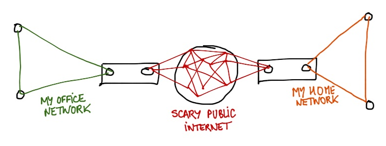
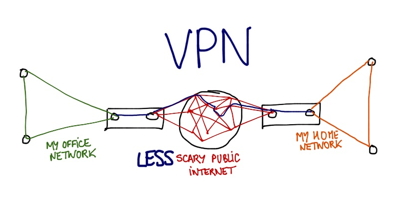

Setting up a VPN Server with Mac OS X Mavericks
My company needed a way for people to access a local network server from home. The solution was to set up a VPN. That was fun and not that hard but I still ran into a couple of issues.
Why a VPN?
In case you’re still wondering what a VPN is at this point, let me explain.

The typical usage of a VPN in a professional context is to create a bridge between your enterprise network and the rest of the Internet. And if the bridge can be secured, it’s better.

OS X Server.app
Our local server is a Mac Mini that was running Mountain Lion at the time. After some research, I realized the easiest solution to set up the VPN access was to use the OS X Server app (17,99€), which required the latest version of OS X aka Mavericks.
After the app was installed, I was pleasantly surprised that the app included a step-by-step tutorial to setup its VPN feature. However, here are some tips that could help:
- make sure to create “local network users” and not “local users”
- make sure not to create a local directory for your VPN users
If you run into errors such as:
DSAuth plugin: MPPE key required, but its retrieval failed.
or:
CHAP peer authentication failed for clinteastwood
you may not have followed these two guidelines and I would invite you to watch this very helpful video as support.
Configuring your set-top box
Port Forwarding
The OS X Server.app’s tutorial is pretty clear about what you should do with your Internet provider box: ports 500, 1701 and 4500 should be redirected to your server.
With my Orange box though, I ran into a problem: the port 1701 could not be redirected at all. The message in the admin console was just: “reserved port” and I found no way to change that.
In my case, the somewhat satisfactory solution was to configure the VPN server for both L2TP and PPTP protocols.
PPTP is less secured than L2TP, but it will do the job.
Local DNS
The default for OS X Server’s VPN access is to use 192.168.1.1 as the local
DNS server, using a .home domain to address the different machines of your
LAN.
If you want to use names for your machines instead of their local IP adresses,
make sure that you assigned names for your different machines in your local
network on this 192.168.1.1 machine.
In addition, you should probably assign static local IP adresses to your different machines as well.
Be aware too, that you should avoid creating conflicts between the VPN network
and a typical home network for instance, where all local IPs could start by
192.168.1.***. Perhaps creating a VPN with IP like 192.168.11.*** for
instance could be a good idea.
Dynamic IP
In my case, Orange wouldn’t let me have a fixed IP address for my box. I considered creating an account with a dynamic DNS service provider but I thought it was a little overpriced and probably not necessary.
Eventually, I realized that my registrar, Gandi, provided an XML-RPC
based API that could modify your DNS records. Then I found the script I needed:
gandyn (python 3) that I just installed on my Mac, and scheduled to
run every 5 minutes via launchctl.
Conclusion
So far, so good. The VPN is up and working correctly. Once connected, I can
access any machines of the LAN via a machine.home address in my browser. I’ll
try to open a ticket to Orange support so that they may open the 1701 port of
their boxes so that I can used the more secured L2TP protocol in the future.
Feel free to submit any addition/correction/remark on this post here.